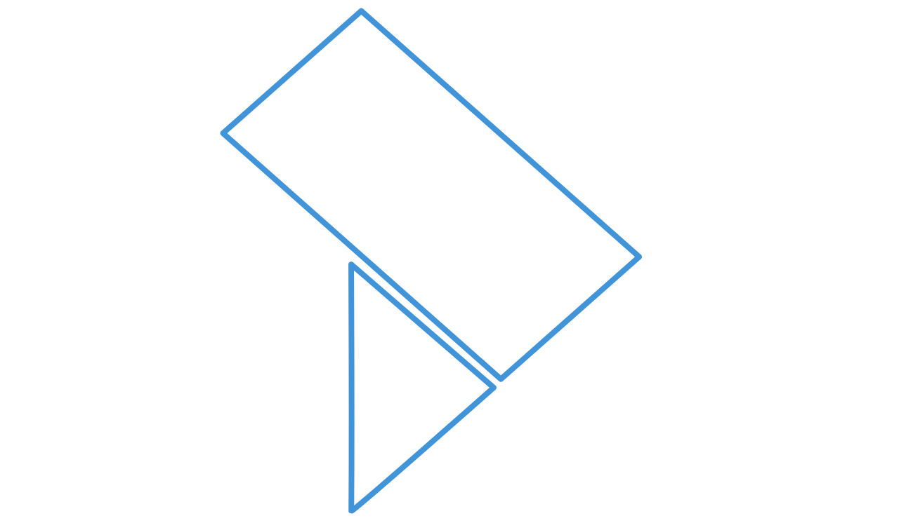

Un sistema, tre formati,
una sola traccia
Il design system de La Traccia serve brochure A4 stampate, interfacce a schermo e slide 16:9 con lo stesso linguaggio: grafica minimale basata su linee sottili e colore, geometrie morbide e smussate, layout aperti senza box. Niente ombre pesanti, niente gradienti, molto bianco.
Palette colore
Un solo hue. Il blu logo è l'unico accento; per varianti si usa oklch mantenendo lo stesso hue.
surface/tint è riservato a
riempimenti piccoli — mai per sfondi di card o pannelli.
Tipografia
Titolo display con parola chiave
Il body copy usa Archivo 400 in colore ink/600, con interlinea generosa. Sulle slide 16:9 (1920×1080) il testo non scende mai sotto i 17px e i titoli stanno tra 60 e 92px.
02 · Eyebrow / kicker
03 · Chip / pill
04 · Voce elenco numerata
Pubblica amministrazione
Protocollo, atti e flussi documentali per enti locali e centrali.
Sanità
Cartella clinica, ambulatori e telemedicina per aziende sanitarie.
Imprese
Gestione, integrazione e automazione dei processi aziendali.
05 · Step di processo
Analisi
Rilievo dei processi e dei vincoli normativi
Progetto
Architettura e piano di attivazione
Avvio
Installazione, migrazione e formazione
Supporto
Assistenza continuativa e aggiornamenti
06 · Riga specifiche
- Lettore smart card CNS / TS
- Stampante termica integrata
- Doppio schermo operatore / utente
07 · Tabella dati
08 · Disegno tecnico quotato
Segmento verticale interrotto
Il segmento verticale è pieno (brand/500) sopra il contenuto e riprende in tinta chiara (brand/100) sotto: la linea "si interrompe" al testo e continua dopo.
Watermark logo negli sfondi
La sagoma outline del logo (assets/logo-traccia-outline.svg,
tratto blu senza riempimento) si usa negli sfondi delle brochure e delle pagine delle presentazioni:
opacità 0,16 sul paper, dietro ai contenuti, tipicamente a sbordo da un angolo pagina.
In questa stessa pagina è attiva in alto a destra.
Contenuto sopra la sagoma
Il watermark non intercetta il puntatore e resta sotto il contenuto (z-index 0); il contenitore pagina ritaglia lo sbordo con overflow hidden.